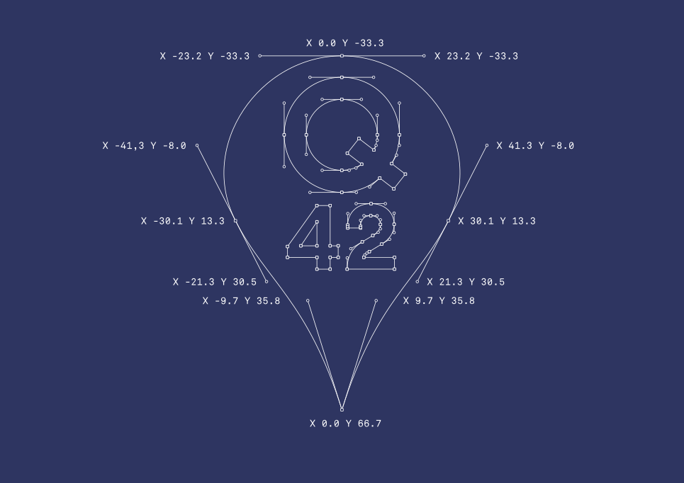

At Q42, technology is a lens for creativity. So our logo itself is also technology: a code logo.
Logos have always changed form with the times. From lead type to black-and-white xerox-friendly to full-color gradients. But logos also have been static. The Q42 logo is interactive, because our medium is interactive.
Q42 doesn't have style guides: we have no desire to constrain creativity in our company. But we do like to make things easy. On this page, we've put all the stuff you need to use our logo.
The Q42 logo is all bezier curves. The control points and coordinates are in the blueprint below for you to recreate for whatever purpose. The Q42 Green is #84bc2d or PMS 376.
That's it! Optionally, you can add attributes to <q42-logo>:
Use the logo as a vector or image file (SVG or PNG). This is not recommended because it is boring.
Rumors exist that outside of the modern world, some still use paper to get stuff done. We don't know why or what for. But if someone asks for something called a 'vector file', just give them this EPS file.
Some awesome alternative logos:
For all your awesome ideas, like doodles on specific days, attract animations, hidden minigames, whatever:
© Q42
{kind=link}